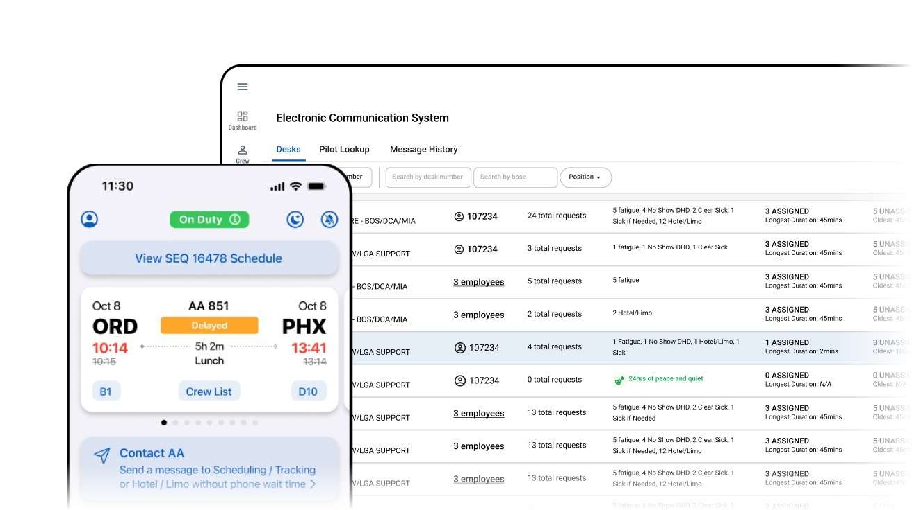
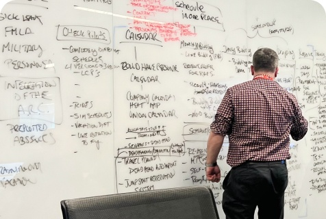
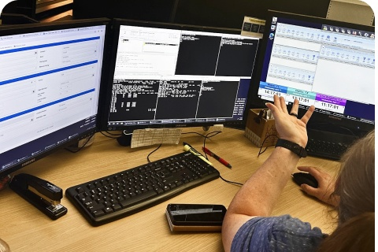
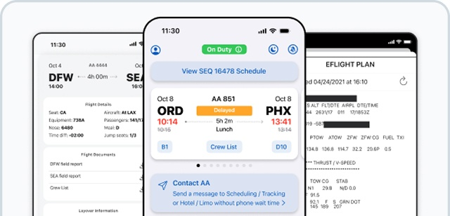
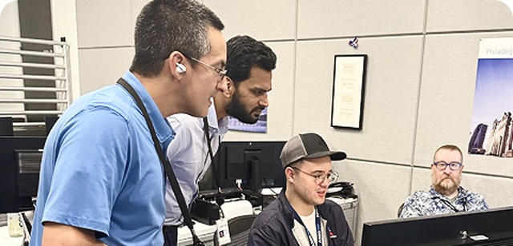
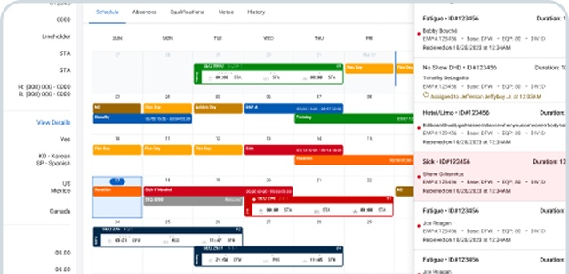
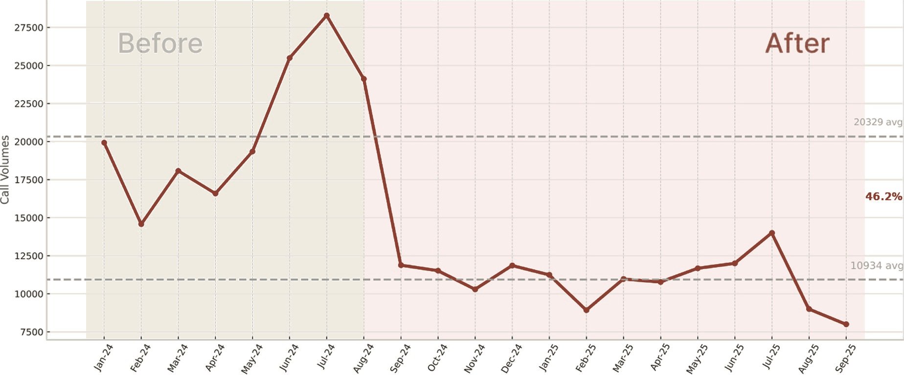

A digital communication system for the Integrated Operations Center that cut call volume by 46%.

Overview
Crew schedulers and trackers at the Integrated Operations Center relied on manual phone calls and outdated communication channels to fulfill operational requests, creating delays and risk across a system supporting more than 40,000 crew members. The team built ECS as the first step toward a unified crew member experience platform, working with flight crew unions, crew members and the Integrated Operations Center to build a strong foundation for that vision. My team delivered this in partnership with product teams and with minimal oversight from me, which is what the systems I've built are designed to make possible.
Objectives
Discover and Define
The team partnered directly with the Integrated Operations Center to understand crew workflows, running a design thinking workshop with schedulers, trackers and product and IT stakeholders to remove conflicting assumptions about what a better system would actually look like. Service blueprints clarified system behavior across more than 40,000 crew members, surfacing exactly where operational requests were breaking down and why call volume to the IOC had grown unsustainable.


Design and Deliver
The team simplified complex crew interactions into a straightforward, functional design, tested directly with crew members on the go and IOC staff managing dense, content-heavy workflows. Iterative testing on the floor of the IOC surfaced quick wins the team could implement immediately, and the redesigned prioritization tools gave IOC members the ability to target urgent requests directly, rather than working through calls one at a time.



Outcomes

- Operational requests that used to take hours now resolve in minutes, without phone trees or hold times
- IOC schedulers and trackers now proactively reach out to busier bases rather than waiting to be flagged
- Broader adaptation and coverage of operational tasks projected to increase through 2026
Built by the American Airlines UX, Product and Integrated Operations Center teams, operating under the design and research standards established across Becky Sherman's organization.
More results

Booking engine redesign

Aileron design system